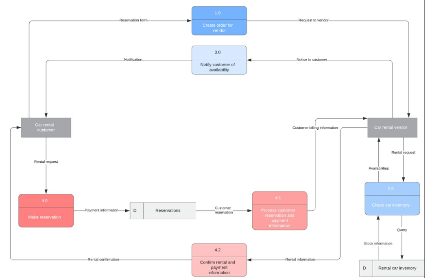

Внешняя документация
Requirements (Требования)
- Свойства программного обеспечения, необходимые пользователю, для решения проблемы при достижении поставленной цели.
- Свойства программного обеспечения, которыми должна обладать система или ее компонент, чтобы удовлетворить требования контракта, стандарта, спецификации либо иной формальной документации.
Могут быть:
- Прямыми: формализованными в технической документации, спецификациях, User Story.
- Косвенными: проистекающими из прямых, либо являющиеся негласным стандартом для данной продукции или основывающиеся на опыте и здравом смысле использования продукта или продуктов подобных ему.
Уровни требований:
Бизнес-требования - описание высокоуровневых целей организации или заказчика, достигаемых посредством разрабатываемой системы.
Например:
- Увеличить охват пользователей
- Увеличить прибыль
- Создать дополнительный канал продаж
Требования заинтересованных лиц (Пользовательские требования)
- Формулировка потребностей определенного заинтересованного лица или их группы.
- Кроме потребности описывается также способ взаимодействия заинтересованных лиц с продуктом.
Покупатель:
- Выбрать товар по определенным критериям.
- Сравнить разные товары.
- Купить товар с помощью кредитной карты.
Администратор:
- Поддерживать перечень товаров в актуальном состоянии.
- Быстро отслеживать и управлять заказами.
Функциональные
Покупатель должен иметь возможность:
- Просмотреть список товаров.
- Фильтровать товары.
- Сравнивать товары между собой.
- Добавлять товары в корзину.
- Оформить заказ.
Администратор должен иметь возможность:
- Добавлять/удалять товар
- Менять цену
- Видеть заказы и менять ему статус
Нефункциональные
Атрибуты качества:
- Время загрузки главной страницы и страницы товара – не выше 3 секунд.
- База данных должна разворачиваться на основные СУБД без дополнительных изменений.
- Сайт должен быть адаптирован под мобильные устройства.
Ограничения в проектировании или реализации:
- Серверная часть должна быть написана на Java.
- Сайт должен устанавливаться на ОС Ubuntu.
Внешние интерфейсы:
- Поддержка платежных систем Visa и MasterCard.
- Поддержка API социальных сетей.
Способы документации требований
Текстовый вид:
- Видение продукта (Product Vision).
- Для (целевой заказчик/аудитория).
- Которым (описание нужд или возможностей).
- Продукт (имя, категория продуктов).
- Который (ключевые выгоды, повод купить).
- В отличие (главное отличие от конкурентов).
- Наш продукт (главное преимущество).
User story: Пользовательская история
Способ описания требований, к разрабатываемой системе, сформулированный, как одно или более предложений на повседневном или деловом языке.
Цель пользовательских историй состоит в том, чтобы быть в состоянии оперативно и без накладных затрат реагировать на быстро изменяющиеся требования реального мира.
Структура:
- Заголовок: описание истории в одну строку.
- Формулировка истории: Я как [роль] хочу [функционал] для того чтобы [выгода].
Acceptance Criteria: Критерии приемки
Acceptance Test Plan
Это критерии, в том числе требования к рабочим характеристикам и основные условия, которые должны быть выполнены чтобы результаты проекта были принятыми.
Критерий приема = минимальное требование.
История: Владелец карточки снимает наличку.
Я как владелец карточки хочу снять наличку в банкомате для того, чтобы получить деньги когда банк закрыт.
Критерии:
- Если достаточно денег, то банкомат выдаёт деньги и карту.
- Если денег не достаточно, то банкомат денег не выдаёт и показывает предупреждение.
- Если карта не активна, то банкомат денег не выдаёт и изымает карту.
Use Case: Сценарий использования
Это перечень действий, сценарий по которому пользователь взаимодействует с приложением, программой для выполнения какого-либо действия для достижения конкретной цели.
- Пользователь захотел разместить объявление.
- Пользователь зашел в систему.
- Пользователь авторизовался в системе.
- Пользователь создал объявление.
- Система отобразила сообщение об успешном создании объявления.
Графический вид
Макеты (Wireframe)
Это низко детализированное представление дизайна, он должен показывать:
- Основные группы содержимого. Что?
- Информационную структуру. Где?
- Описание взаимодействия пользователя с интерфейсом и его примерную визуализацию. Как?

Диаграммы (Diagrams)
UML (Unified Modeling Language — унифицированный язык моделирования) — язык графического описания для объектного моделирования в области разработки программного обеспечения, для моделирования бизнес-процессов, системного проектирования и отображения организационных структур.

DFD: Data Flow Diagrams - графическая модель потока данных в системе.
ERD: Entity Relationship Diagram - графическая модель структуры данных, отображает:
- entities: сущности
- attributes: атрибуты
- relationships: связи между сущностями
Flowcharts - блок-схемы и произвольные диаграммы

Требования к требованиям
- Полнота.
- Однозначность.
- Непересекаемость.
Основные проблемы требований
- Непонятность требований.
- Частая изменяемость.
- Изменения, вносимые в последний момент.
- Неверная трактовка требований.
Характеристики требований
- Завершенность - Требование полностью определено в одном месте и вся необходимая информация присутствует.
- Последовательность - Требование не противоречит другим требованиям и полностью соответствует внешней документации.
- Атомарность - Требование «атомарно». То есть оно не может быть разбито на ряд более детальных требований без потери завершенности.
- Отслеживаемость - возможность отследить связь между требованием и другими артефактами проекта, каждое требование имеет уникальный идентификатор, по которому оно легко прослеживается.
- Актуальность - Требование не стало устаревшим с течением времени.
- Выполнимость - Требование может быть реализовано в пределах проекта.
- Использование отрицательных утверждений и составных утверждений запрещено.
- Обязательность - Требование представляет определенную заинтересованным лицом характеристику, отсутствие которой приводит к неполноценности решения, которая не может быть проигнорирована.
- Необязательное требование — противоречие самому понятию требования.
- Проверяемость – существует способ однозначной проверки выполнено требование или нет.
- Недвусмысленность:
- Требование кратко определено без обращения к техническому жаргону, акронимам и другим скрытым формулировкам.
- Выражает объективные факты, не субъективные мнения.
- Возможна одна и только одна интерпретация.
- Определение не содержит нечётких фраз.
Техники тестирования требований
Взаимный просмотр
- Беглый просмотр — автор показывает свою работу коллегам, они в свою очередь дают свои рекомендации, высказывают свои вопросы и замечания.
- Технический просмотр — выполняется группой специалистов.
- Формальная инспекция — привлекается большое количество специалистов, представляет собой структурированный, систематизированный и документированный подход.
- Минус такого варианта — тратится много времени.
- Плюс - если возникают вопросы, то можно спрашивать у представителей заказчика, более опытных коллег.
прототипирование
Тест-кейсы и чек-листы
Тест-кейсы и чек-листы — хорошее требование должно быть проверяемым, чтобы это определить можно использовать чек-листы или полноценные тест-кейсы.
- Если можно быстро придумать несколько пунктов чек-листа — это уже хороший знак.
- Исследование поведения системы — необходимо мысленно смоделировать процесс работы пользователя с системой, созданной по тестируемым требованиям, после этого определить неоднозначные варианты определения системы.
- Рисунки и прототипы — графическое представление дает наглядное представление приложения, на рисунке проще увидеть, что какие-то элементы не стыкуются, где-то чего-то не хватает и т.д. Сделав наброски пользовательского интерфейса, легко оценить применение тех или иных пользовательских решений.
Bug or Defect Report (Отчет о баге или о дефекте)
Отчет о дефекте - это документ, описывающий ситуацию или последовательность действий приведшую к некорректной работе объекта тестирования, с указанием причин и ожидаемого результата.
- Summary: Короткое описание общее описание дефекта и наблюдаемого сбоя. Это первое, что видят менеджеры и разработчики.
- Preconditions: Предусловия.
- Environment: Окружение (dev, stage, prod).
- Component: Компонент приложения.
- Version: Номер версии.
- Severity: Блокирующая, Критическая, Высокая, Низкая, Самая низкая. Серьезность - это атрибут, показывает технологическое влияние дефекта на работоспособность приложения.
- Priority: Наивысшая, Высокая, Обычная, Низкая. Приоритет - это атрибут, показывает важность дефекта для бизнеса.
- Status: Статус.
- Reporter: Автор.
- Description: Описание.
- Steps to Reproduce: Шаги воспроизведения.
- Actual Result: Фактический Результат.
- Expected Result: Ожидаемый результат.
- Attachments: Вложения.
Отчет о дефекте:
- Заголовок не отвечает на вопросы: где? что? когда?
- Заголовок не содержит в себе полную информацию о баге.
- Нет всех обязательных атрибутов: ID, Заголовок, Шаги, Ожидаемый результат, Фактический результат, Вложение, Окружение, Приоритет.
- Использование личностной оценки и личностных глаголов.
- Использование не технической терминологии.
- По вложению непонятно где баг.
- Слишком длинные видео, посторонние звуки.
- Не используются программные возможности скриншотера (фигуры от руки, нет обозначения бага).
- Создание нескольких одинаковых багов, которые можно объединить.
- Нет ссылок на требования, дизайн и/или связанные задачи.
- Отсутствуют важные шаги.
- Нет тестовых данных, которые привели к воспроизведению бага.
Change Request (Запрос на изменение)
Test Report (Отчет о тестировании)
Test Summary ReportБывает:
- финальный
- промежуточный: дневной, недельный, месячный, версионный (отчет по итерации)
- состав команды
- сроки
- описание процессов тестирования
- дополнения к тестовым кейсам
- процент пройденных кейсов
- критичные баги
- результаты регрессионного тестирования
- планы (только для промежуточных)
Внутренняя документация
Scenario - общее название для check list, test case, test suite, любого документа содержащего инструкции про проведению теста.
- На основе требований.
- На основе вариантов использования (use case).
- На основе модели.
Test Plan (План тестирования)
Test Plan
Документ, описывающий весь объем работ по тестированию.
Это руководство для процесса тестирования.
Бывает:
- Мастер тест план: для всех команд на одном проекте.
- Детальный тест план: для каждой итерации, команды, релиза.
- План приёмочных испытаний: Acceptance plan.
Хороший тест план должен как минимум описывать
- Что будем тестировать?
- Как будем тестировать?
- Когда будете тестировать?
Структура тест-плана:
1-я страница:
- шапка (логотип и адрес компании)
- название тест-плана
- версия тест-плана
2-я страница: история документа - таблица изменений со столбцами: дата, версия, описание, автор
3-я страница: содержание тест-плана
4-я страница и далее:
- введение
- объем работы и область тестирования
- типы и техники тестирования
- операционные системы и браузеры
- функционал приложения
- окружение и ресурсы
- характеристики оборудования
- приоритет тестирования
- стратегия тестирования - методы, виды, уровни
- задачи тестировщиков
- тестовая документация
- баг-трекинг
- оценки качества и метрики
- оценка рисков
Предпоследняя страница:
- критерии начала тестирования
- критерии выхода из тестирования
- дата начала и окончания тестирования
- сколько человеко-часов планируется на различных этапах: на тест-дизайн, выполнение тестов, анализ тестирования, отчеты
Последняя страница:
- выводы и рекомендации
- рецензирование и утверждение
Scope of Work: Объем тестирования
- Что мы будем делать?
- Зачем?
- Для какого клиента?
- Кто будет использовать продукт?
- Для чего будет использоваться продукт?
- Какие компоненты и функции нужно протестировать, а какие тестироваться не будут?
Test Strategy: Стратегии тестирования
- Что мы будем делать?
- Зачем?
- Для какого клиента?
- Кто будет использовать продукт?
- Для чего будет использоваться продукт?
- Какие компоненты и функции нужно протестировать, а какие тестироваться не будут?
Наиболее важная часть документа. Иногда может выноситься в отдельный документ.
Используется для описания процесса тестирования, перечень правил, стандартов и регламентов.
Нужна при наличии отдельного департамента тестирования.
В настоящее время не применяется так как часто меняется и основные правила тестирования уже стали обычной практикой.
Стратегия тестирования определяет:
- Информация о продукте.
- Цели тестирования.
- Процесс тестирования.
- Уровни и типы тестирования.
- Роли и ответственность.
- Анализ рисков.
- Тестовое окружение.
- Используемые ресурсы.
- Документацию.
- Необходимое в процессе работы оборудование.
- Специальные знания.
- Оценки рисков с вариантами их разрешения.
- Критерии начала и окончания тестирования.
- Approvals: Утверждение плана.
| Риск | Меры |
|---|---|
| У команды не достаточно знаний | Запланировать обучение команды |
| Слишком сжатые сроки | Максимально точная приоритизация |
| Слишком много изменений перед релизом | Заморозка кода |
Пример рисков:
- Ограниченность ресурсов.
- Недостаточная квалификация.
- Отсутствие документации.
- Поздние изменения.
- Проблемы сторонних решений.
- Контрактные проблемы.
Расписание тестирования
- Список необходимых задач, их последовательность.
- Оценка и сроки выполнения.
- Критериев начала и окончания тестирования (Entry & Exit Criteria).
Entry Criteria
- Готовность тестовой платформы (тестового стенда).
- Законченность разработки требуемого функционала.
- Наличие всей необходимой документации.
Exit Criteria
- Определенный процент критических кейсов пройден.
- Нет открытых критических дефектов.
- Прошло определенное время без открытия новых дефектов (Zero Bug Bounce).
- Закончились средства.
- Наступил дедлайн.
Рецензирование
Для увеличения ценности тест плана рекомендуется проводить его периодическое рецензирование со стороны участников проектной группы:
- Ведущий тестировщик.
- Тест менеджер (менеджер по качеству, QM.).
- Руководитель разработки.
- Менеджер проекта.
Check List (Список проверок)
Check ListSmoke Test Checklist
Это документ, описывающий что должно быть протестировано.
При этом чек-лист может быть абсолютно разного уровня детализации.
На сколько детальным будет чек-лист зависит от:
- Требований к отчётности.
- Уровня знания продукта сотрудниками.
- Сложности продукта.
чек-лист нужен:
- Не забыть требуемые тесты.
- Для деления задач по уровню квалификации.
- Для сохранения отчётности и результатов тестирования.
- Замена тестовым случаям (Test Cases) в условиях нехватки времени.
В целом, грамотно составленные списки в значительной степени могут эффективно справится с функциями детально расписанных тест-кейсов.
Именно поэтому не во всех случаях рациональным будет трата времени на написание тест-кейсов.
Решение о их необходимости (или же наоборот) является результатом тщательно обдуманного планирования и не может быть универсальным для всех проектов.
Чек-лист:
- Только позитивные проверки.
- Группировка большого количества проверок в одну.
- Группировка всех негативных кейсов в одном.
- Слишком короткое описание.
- Нет шапки с информацией об окружении, дате тестирования, имени тестировщика.
- Нет статусов.
- Нет разделения на модули.
- Тестирование начинается с негативных проверок.
- Использование нетехнической терминологии.
Test case (Тестовый случай)
Test case- Тестировщик проверяет продукт, а не тестирует его.
- Тестировщики выключают мозг, проходя Test Case.
- Любой может выполнять Test Cases, но они не заменяют опытных тестировщиков, которые могут тестировать.
Документ, в котором содержится совокупность шагов, конкретных условий и параметров, необходимых для проверки реализации тестируемой функции или её части, для проверки одного ожидаемого результата. Тестовый случай состоит из:
- ID: Уникальный идентификатор.
- Description: Название.
- Precondition: Предусловия – опционально.
- Steps: Шаги.
- Expected result: Ожидаемый результат.
Тест-кейсы нужны:
- Жизненно важные системы, ошибка в которых может привести к гибели (самолетостроение, медицина, ПО для атомных станций).
- При тестировании сложных систем или сложных частей системы, чтобы не запутаться в чек-листе.
- Планирование, и только потом – выполнение!
- Дают нам структурированный системный подход, что снижает вероятность пропуска ошибки.
- Хороший способ хранения части проектной информации.
- Один из способов протестировать проектную документацию еще до выхода первого билда.
- Ускоряет регрессионное тестирование.
- Можно доверить выполнять новичку или призванному на помощь коллеге из другого отдела.
- Можем в любой момент «вспомнить», что мы делали месяц, полгода, год назад.
- Тест-кейсы позволяют легко отслеживать прогресс: X% тестов выполнено, Y% тестов прошло/завалилось, Z% требований покрыто тестами.
Тест-кейсы НЕ нужны:
- Простые системы (веб-сайты, мобильные приложения и т. п.).
- Ситуации, когда в команде всего один или два тестировщика, знающие свой продукт.
- Время, потраченное на создание и поддержку тест-кейсов никогда не окупится.
Преимущества тест-кейсов:
- Время (приоритизация проверок).
- Более быстрое введение в проект новых людей или подключение коллег из других проектов для проведения сессии тестирования.
- Напоминание о конфигурировании и настройке системы.
- Незаменимы при работе над на «тяжелых» проектах.
- Понимание информации одинаково всеми участниками процесса.
- Напоминание о старой функциональности, которую все еще нужно тестировать.
Недостатки тест-кейсов:
- Один ожидаемый результат - один Test Case, у каждого проверяемого результата отдельный Test Case.
- Разные Test Case, для одного функционала очень похожи.
- Сложность поддержки.
- Неактуальное состояние.
- Следуя сценарию, можно упустить важные проблемы.
- Валидация небольшого кусочка функциональности.
Тест-кейс:
- Нет всех обязательных атрибутов: ID, Заголовок, Шаги, Ожидаемый результат, Фактический результат, Вложение, Окружение, Приоритет.
- В предусловие выносится навигация: открыть страницу в нужном месте.
- Лишнее дублирование очевидных вещей: в заголовке есть слова 'Проверить', 'Test Case'.
- В шагах не используются инфинитивы, либо есть отсылка к личности человека: открой, открыл.
- Один кейс - одна проверка.
- Объединение негативных кейсов.
- Заголовок не отражает суть проверки.
- Нет информации о тестовых данных.
- Дублирование кейсов и создание избыточной документации.
Test Suites (Тестовый набор)
Regression Test SuiteНабор тестов - это папка или документ, который содержит перечень тестовых случаев (test case) и тестов, которые объединены тем что относятся к одному тестируемому модулю, функциональности, приоритету или одному типу тестирования.
Traceability Matrix (Матрица отслеживания)
Traceability Matrix
Это двумерная таблица, содержащая соответствие функциональных требований (functional requirements) продукта и подготовленных тестовых сценариев (test cases).
В заголовках колонок таблицы расположены требования, а в заголовках строк — тестовые сценарии.
На пересечении — отметка, означающая, что требование текущей колонки покрыто тестовым сценарием текущей строки.
Матрица обычно хранится в виде электронной таблицы.
| Тест-кейс1 | Тест-кейс2 | Тест-кейс3 | Тест-кейс4 | Тест-кейс5 | Test Cases for respective Requirement | |
|---|---|---|---|---|---|---|
| Требование1 | x | x | x | 3 | ||
| Требование2 | x | x | 2 | |||
| Требование3 | x | 1 | ||||
| Требование4 | x | x | 2 | |||
| Требование5 | x | 1 |
- Это матрица покрытия требований тест-кейсами.
- При разработке тестов ориентироваться какие из требований уже покрыты.
- При выполнении тестирования ориентироваться какие из требований прошли все написанные для них тесты успешно.
Покрытие тестами
- Code coverage - покрытие кода Unit тестами и автотестами. Считать сколько строк кода покрыто тестами относительно общего количества строк.
- Requirements coverage - покрытие требований в Requirements Traceability Matrix (RTM) - матрица отслеживания требований.
Документация пишется на английском языке в passive voice.